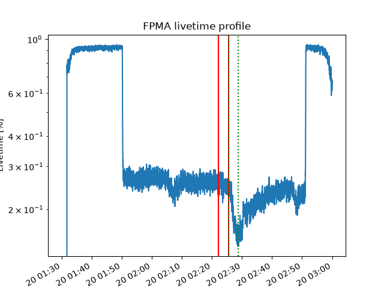
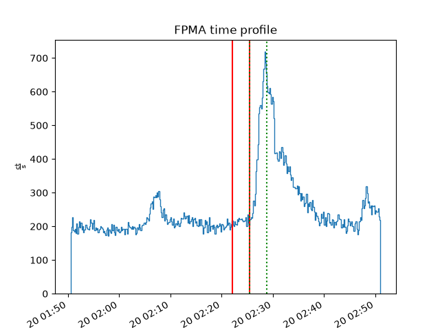
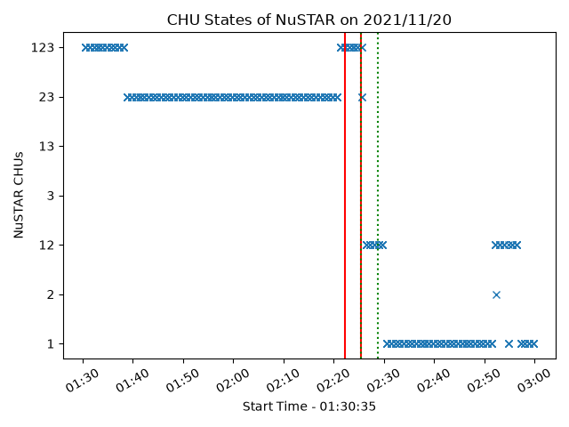

Note
Go to the end to download the full example code.
Plotting NuSTAR Time Profiles
This example shows plotting different NuSTAR time profiles.
import ntpath
import os
import urllib.request
import matplotlib.dates as mdates
import matplotlib.pyplot as plt
from astropy.visualization import time_support
from jdhsrpy import TEST_DATA_LOCATION
from jdhsrpy.nustar_evt import NustarEvt, chu_state_array, livetime_array
from jdhsrpy.visualize import (
chu_plot,
livetime_plot,
time_profile_plot,
vertical_line_of_time,
)
Download an example “sunpos” NuSTAR EVT and livetime file.
url = f"{TEST_DATA_LOCATION}/test_nustar_data/nu20619003001A06_cl_sunpos.evt"
filename_evt = os.path.join(os.getcwd(), ntpath.split(url)[1])
if not os.path.isfile(filename_evt):
urllib.request.urlretrieve(url, filename_evt)
url = f"{TEST_DATA_LOCATION}/test_nustar_data/nu20619003001A_fpm.hk"
filename_lvt = os.path.join(os.getcwd(), ntpath.split(url)[1])
if not os.path.isfile(filename_lvt):
urllib.request.urlretrieve(url, filename_lvt)
url = f"{TEST_DATA_LOCATION}/test_nustar_data/nu20619003001_chu123.fits"
filename_chu = os.path.join(os.getcwd(), ntpath.split(url)[1])
if not os.path.isfile(filename_chu):
urllib.request.urlretrieve(url, filename_chu)
Use the class to load in and work with the file.
nustar_object = NustarEvt(evt_filename=filename_evt)
Livetime
Let’s plot the livetime time profile first
We can also happily plot some interesting time indicators on the plot if we want.
times, livetimes = livetime_array(filename_lvt)
# choose some interesting times
time_1 = "2021-11-20T02:22:10"
time0 = "2021-11-20T02:25:30"
time1 = "2021-11-20T02:28:50"
# let's plot
time_support(format="unix_tai")
plt.figure()
axes = livetime_plot(times, livetimes)
vertical_line_of_time(time_1, c="r", axes=axes)
vertical_line_of_time(time0, c="r", axes=axes)
vertical_line_of_time(time0, c="g", axes=axes, ls=":")
vertical_line_of_time(time1, c="g", axes=axes, ls=":")
plt.title(f"FPM{nustar_object.fpm} livetime profile")
plt.xticks(rotation=30, ha="right")
plt.ylabel("Livetime [%]")
plt.xlabel("Time")
plt.show()

Rate
Since we know where the livetime information is then we can start using it more. This allows us to create a livetime corrected count rate profile.
times, cts = nustar_object.rate_time_profile_array(filename_lvt)
time_support(format="unix_tai")
plt.figure()
axes = time_profile_plot(times, cts)
vertical_line_of_time(time_1, c="r", axes=axes)
vertical_line_of_time(time0, c="r", axes=axes)
vertical_line_of_time(time0, c="g", axes=axes, ls=":")
vertical_line_of_time(time1, c="g", axes=axes, ls=":")
plt.title(f"FPM{nustar_object.fpm} time profile")
plt.xticks(rotation=30, ha="right")
plt.ylabel(f"{cts.unit:latex}")
plt.xlabel("Time")
plt.show()

CHU state
If we know where the CHU state information is, we can plot that too.
chu_times, chus, labels = chu_state_array(filename_chu)
plt.figure()
axes = chu_plot(chu_times, chus, labels)
plt.title(
"CHU States of NuSTAR on " + chu_times[0].strftime("%Y/%m/%d")
) # get the date in the title
plt.xlabel("Start Time - " + chu_times[0].strftime("%H:%M:%S"))
plt.ylabel("NuSTAR CHUs")
vertical_line_of_time(time_1, c="r", axes=axes)
vertical_line_of_time(time0, c="r", axes=axes)
vertical_line_of_time(time0, c="g", axes=axes, ls=":")
vertical_line_of_time(time1, c="g", axes=axes, ls=":")
fmt = mdates.DateFormatter("%H:%M")
axes.xaxis.set_major_formatter(fmt)
plt.xticks(rotation=30)
plt.tight_layout()
plt.show()

Total running time of the script: (0 minutes 0.868 seconds)